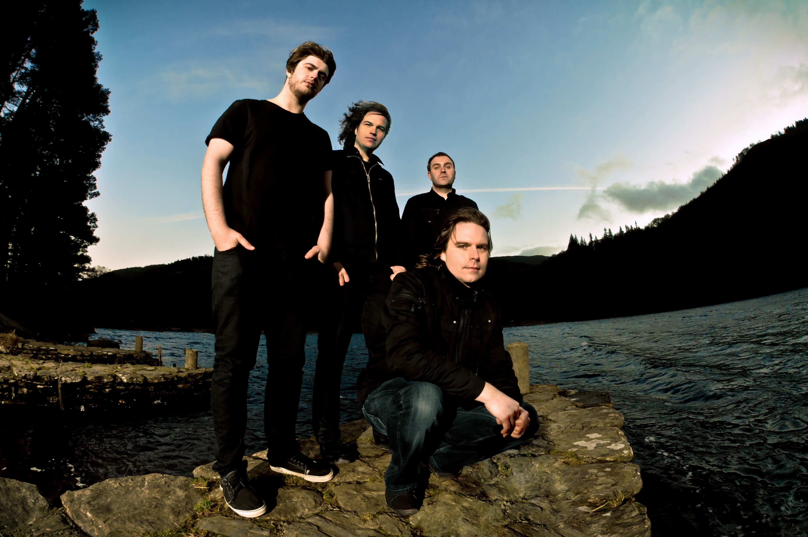
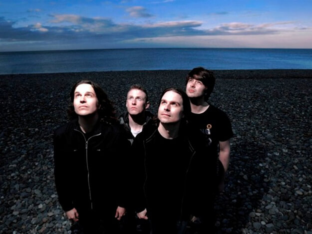

God Is an Astronaut - ирландский инструментальный коллектив, исполняющий музыку в жанре пост-рок. Группа образовалась в 2002 году и выпустила свой первый альбом The End of the Beginning на собственном лейбле Revive Records.
Два видеоклипа на песни из альбома The End of the Beginning: «The End of the Beginning» и «From Dust to the Beyond» были в ротации на MTV UK и других европейских сетях MTV.
На ирландскую команду God Is An Astronaut журналисты навесили ярлык "пост-рок", хотя сами музыканты зачастую открещивались от этого определения, предпочитая просто играть то, что им нравится, а не подстраиваться под какой-то конкретный жанр.


Творчество "астронавтов" характеризуется многослойными мелодиями, электронными заимствованиями у Tangerine Dream, спэйс-роковыми фишками а-ля Pink Floyd и эмбиентным вокализом, а их концерты с течением времени превратились в психоделические шоу со световыми эффектами. Братья Торстен и Нильс Кинселла играли в различных рок-бандах еще с начала 90-х, но к середине декады, когда живая музыка в их стране практически умерла, они занялись экспериментами с электроникой.
Имея скромный успех на новом поприще, они делали ремиксы для "EMI" и "Universal" - и в 2000 году все же обзавелись контрактом со звукозаписывающей компанией Peer Music.
Заручившись поддержкой лейбла, братья пробовали работать с разными вокалистами, но все эти проекты заходили в тупик, и к 2002 году Торстен с Кинселла решили переключиться на инструментальную музыку. Нужного материала у них накопилось довольно много, и вскоре для реализации идеи была создана семейная группа God Is An Astronaut. Название для команды парни позаимствовали из фильма Клайва Баркера "Nightbreed", где один из персонажей произнес фразу: "God Is An Astronaut, Oz lies over the rainbow, and Midian … is where the monsters live".
Мы вместе с виски Tullamore D.E.W. готовы отправить Вас в Ирландию. Запишите кавер на песню любого ирландского музыканта или группы, снимите это на видео, опубликуйте в Youtube, а ссылку пришлите в личные сообщения на странице Просто Радио https://www.facebook.com/ProstoRadi.O.NewRock/ или на irishtrue.vgorode.ua. Все это нужно сделать до 5 декабря. А главный приз - Рокстар Уикенд в столице Ирландии!